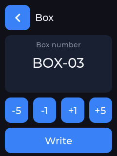

NFC & Spoolman
Welche Tags die Waage versteht und wie sie mit Spoolman spricht.Which tags the scale understands and how it talks to Spoolman.
- Tag-FormateTag formats
- Spule zuordnenAssigning spools
- Tags schreibenWriting tags
- Spoolman
- KatalogabgleichCatalog sync
Tag-FormateTag formats
Unterstützt werden NTAG215 und NTAG216. Jeder Tag enthält einen NDEF-Record vom Typ application/json. Die Kapazität liest die Waage aus dem Capability Container (NTAG215: 496 Byte, NTAG216: 872 Byte). Die UID wird überall als Hex in Großbuchstaben ohne Trennzeichen geführt.NTAG215 and NTAG216 are supported. Every tag holds one NDEF record of type application/json. The scale reads capacity from the capability container (NTAG215: 496 bytes, NTAG216: 872 bytes). UIDs are always uppercase hex without separators.
SpuleSpool
OpenSpool-kompatibel, dazu das Zusatzfeld spoolman_id. Erkennung über "protocol": "openspool".OpenSpool compatible, plus the extra field spoolman_id. Detected via "protocol": "openspool".
Box
Eigenes Format. Der name wird 1:1 zum Lagerort in Spoolman.Own format. The name becomes the Spoolman location 1:1.
BenutzerUser
Meldet am Gerät an. Maßgeblich ist die ID in der Benutzerliste.Signs in on the device. The ID in the user list is authoritative.
Admin
Token statt PIN. Es gilt immer nur der zuletzt erzeugte.A token instead of the PIN. Only the most recently created one is valid.
Spulen-TagSpool tag
{
"protocol": "openspool",
"version": "1.0",
"type": "PLA",
"color_hex": "FF5733",
"brand": "Generic",
"min_temp": "190",
"max_temp": "220",
"spoolman_id": 42
}Box-, Benutzer- und Admin-TagBox, user and admin tags
{ "type": "box", "id": "BOX-03", "name": "Box 03" }
{ "type": "user", "id": 3, "name": "Fabian" }
{ "type": "admin", "token": "<32 Hex>" }Ein Tag ohne NDEF oder mit unbekanntem JSON gilt als „leer/unbekannt“. Ein Admin-Tag lässt sich kopieren, das Passwort ist sicherer.A tag without NDEF or with unknown JSON counts as “empty/unknown”. An admin tag can be cloned, the password is safer.
Wie eine Spule gefunden wirdHow a spool is found
- Steht
spoolman_idauf dem Tag, wird die Spule direkt geladen.If the tag hasspoolman_id, the spool is loaded directly. - Sonst sucht die Waage über die Tag-UID bei Spoolman (native NFC-Tags ab Spoolman 0.27).Otherwise the scale looks the tag UID up in Spoolman (native NFC tags since Spoolman 0.27).
- Kennt Spoolman den Tag nicht, öffnet sich automatisch die Auswahl „Unbekannte Spule“ mit der Spulenliste (bis 60 Einträge). Nach der Auswahl wird der Tag in Spoolman verknüpft und
spoolman_idauf den Tag geschrieben. Vorhandene OpenSpool-Daten bleiben erhalten.If Spoolman does not know the tag, the “Unknown spool” picker opens with the spool list (up to 60 entries). After you pick one the tag is linked in Spoolman andspoolman_idis written to the tag. Existing OpenSpool data is kept.

Tags schreibenWriting tags
- Box-Tag am Gerät: Menü → NFC → Box, Nummer wählen, Tag auflegen. Ergebnis ist z. B.
BOX-03.Box tag on the device: Menu → NFC → Box, pick a number, place the tag. Result e.g.BOX-03. - Filament-Tag am Gerät: Menü → NFC → Filament → Typ → Hersteller → Farbe → Schreiben. Temperaturbereich und Farbe kommen aus dem Katalog.Filament tag on the device: Menu → NFC → Filament → type → vendor → colour → write. Temperature range and colour come from the catalog.
- Benutzer- und Admin-Tags löst die Weboberfläche aus. Web-Aufträge schreiben nur auf einen neu aufgelegten Tag und überschreiben nie Spulen-Tags.User and admin tags are triggered from the web UI. Web jobs only write to a freshly placed tag and never overwrite spool tags.
- Schreibschutz-Prüfung: Vor dem Schreiben prüft die Waage Schreibzugriff, Lock-Bytes und dynamische Lock-Bytes. Nach dem Schreiben liest sie zurück und vergleicht. Gesperrte Tags werden nicht beschrieben.Write-protection check: before writing, the scale checks write access, lock bytes and dynamic lock bytes. After writing it reads back and compares. Locked tags are never written.


Spoolman
Die Basis-URL stellst du in secrets.h oder später auf der Webseite ein, zum Beispiel http://spoolman.local:7912. Die Anbindung wurde gegen Spoolman 0.27.0 geprüft. Alle 30 Sekunden prüft die Waage die Erreichbarkeit (/api/v1/info), Anfragen laufen in einem eigenen Task und blockieren Oberfläche und OTA nicht.Set the base URL in secrets.h or later in the web UI, for example http://spoolman.local:7912. The integration was verified against Spoolman 0.27.0. Every 30 seconds the scale checks reachability (/api/v1/info); requests run in their own task and do not block the UI or OTA.
| Spule ladenLoad spool | GET /api/v1/spool/{id} |
|---|---|
| Per UID suchenFind by UID | GET /api/v1/spool?tag=<UID>&allow_archived=true&limit=1 |
| Tag verknüpfenLink tag | POST /api/v1/spool/{id}/tag (409 = gehört schon einer anderen Spulealready belongs to another spool) |
| SpeichernSave | PATCH /api/v1/spool/{id} remaining_weight, location, owner |
Gut zu wissenGood to know
remaining_weightnimmt Spoolman nur an, wenn die Filamentsorte ein Füllgewicht (filament.weight) hat. Sonst kommt ein Fehler, den die Waage anzeigt.Spoolman only acceptsremaining_weightwhen the filament has a net weight (filament.weight). Otherwise it returns an error, which the scale shows.- Besitzer: Der angemeldete Benutzer wird als
ownereingetragen. Lege dafür in Spoolman unter Einstellungen → Extra Fields → Spool ein Textfeldowneran. Andere Extra-Felder der Spule bleiben erhalten, die Waage führt sie beim Schreiben zusammen.Owner: the signed-in user is written asowner. Create a text fieldownerin Spoolman under Settings → Extra Fields → Spool. Other extra fields of the spool are preserved, the scale merges them when writing. - Offline: Bei Netzwerkfehlern oder HTTP 5xx landet das Update in der Warteschlange, bei 4xx wird es verworfen und gezählt. Home zeigt „Ausstehende Updates“.Offline: on network errors or HTTP 5xx the update is queued, on 4xx it is dropped and counted. Home shows “Pending updates”.
KatalogabgleichCatalog sync
Der Katalog (Typen mit Temperaturbereich, Hersteller, Farben; je höchstens 24 Einträge) steht im Flash und überlebt Dateisystem-Updates. Alle 10 Minuten und auf Knopfdruck ergänzt die Waage neue Hersteller und Materialien aus Spoolman. Vorhandenes bleibt unverändert, gelöscht wird nichts. Für neue Typen nimmt sie den kleinsten und größten Extruder-Temperaturwert der Filamente, ohne Werte übliche Standardwerte (PLA 190–220, PETG 220–250, ABS 230–260 und weitere). Farben werden nicht abgeglichen.The catalog (types with temperature range, vendors, colours; up to 24 entries each) lives in flash and survives file-system updates. Every 10 minutes and on demand the scale adds new vendors and materials from Spoolman. Existing entries stay untouched and nothing is deleted. For new types it takes the lowest and highest extruder temperature of those filaments, or common defaults when none are set (PLA 190–220, PETG 220–250, ABS 230–260 and more). Colours are not synced.